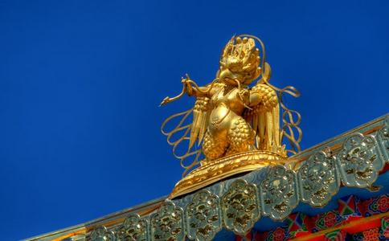

大鹏金翅鸟有多大呢？大鹏金翅鸟是神鸟，它的身体非常大；你不认识它，看见了，还以为是一座山呢！
怎么叫大鹏呢？就因为它的翅膀很大。它翅膀一展，有三百三十由旬那么长。由旬，有小由旬、中由旬、大由旬；小由旬是四十里，中由旬是六十里，大由旬是八十里。这三百三十由旬是按照大由旬八十里讲的，你算看看这大鹏金翅鸟的翅膀有多大？有多长？
大鹏金翅鸟的翅膀这么长，它的力量也特别大，有多大？它把翅膀往海面一扇，能把海里的水辟开成两半，海水即刻就扇到一边去；这三百三十由旬的地方就没有海水，海底都露出来了。为什么它能把海底给扇出来？因为它力量太大了，一翅膀就可以把海里的水都扇没了。海水扇干了，要做什么？它把海水扇干了，不单鱼、鳖、虾、蟹都露出来，海底也露出来了。龙就住在海底深处，龙会变化，可是这时，一见金翅鸟啊！就骇得也不会变了，也不会跑了，就软在那地方不能动弹，于是大鹏金翅鸟用金刚嘴把龙叼起来，一口就把龙吞了。
大鸟吃大龙 大鹏金翅鸟能降龙，龙一见到它，一切
大鸟和小鸟都是鸟，大虫子和小虫子都是虫，虽有大、有小，但都是同一类。而龙就是大虫子，大虫子吃什么？吃小虫子：它吃了小虫子，所以大鹏金翅鸟就为小虫子报仇，来吃它这条大虫子。
你我现在问问你们，你们是爱鸟？还是爱虫子？是欢喜养鸟？还是欢喜养虫？你们说一句真话，不管它愚痴也好，聪明也好，你欢喜哪一样？是欢喜鸟？还是欢喜懒虫？你要是欢喜做一条懒虫，大鹏金翅鸟就会把你当做虫，一口就把你吞到肚里去，所以你还是不要做懒虫，那是很危险的。
有的人说：“我也不说欢喜鸟，也不说欢喜虫子，什么我也不说，我就爱睡觉！”就在那儿睡觉了。嘿！睡觉虽然不是什么错，可是因为睡糊涂了，所以也不知道哪个对，哪个错。
爱莫能助一般来说，鸟身上花花绿绿，很好看的，会飞又会唱，声音非常好听，人人都欢喜鸟。虫子生得很丑陋，好像人一看见蛇，吓得身上的汗毛都会竖起来──“嗐！蛇会不会咬我啊？”尤其在晚间，要是看见一条蛇，吓得几乎就要死了。或者有些虫子的样子生得奇奇怪怪，你一看见，恶！──从肚里头把所吃的东西都呕出来。
有的人又说：“我要是爱鸟，就会变鸟；我要是爱虫子，就会变虫子。因为我不愿意变虫子，也不愿意变鸟，将来我还是愿意做人，所以这两样我都不欢喜。”这也对的。
现在你们知道这个意思了，“爱莫能助”就是你虽然爱它，可是不能帮助它！可以说，爱金翅鸟，就不帮助龙；而爱龙，就不能帮助金翅鸟，这也叫爱莫能助。那么，佛也不爱鸟，也不爱龙。为什么？佛要是爱大鹏金翅鸟，就不会帮助龙；佛要是爱龙，也就不会帮助大鹏金翅鸟。
一天要吃一条大龙你看，大鹏金翅鸟的翅膀一展就有三百三十由旬那么长！它的嘴最低限度也有一百由旬那么大，所以可以很容易地吃上几千条龙，把龙子龙孙都吃得快没有了。为什么？因为它每一天要吃一条大龙（就是龙王），再吃五百条小龙（就是龙子龙孙）；把大龙当一顿正餐那样吃，拿五百条小龙当作点心来吃──每一天就要吃这么多！它吃龙就好像我们人吃面条一样，左一条龙，右一条龙，一口可以吃很多条，叨起来一吞就十几二十多条龙，一口就吞下去，吞得很快！它吃龙的时候，也有规矩的，从龙的尾巴先吞，不先吞龙头；吞了之后，就都放到它的大嗉项（囊袋）里储藏，然后慢慢消化。
大鹏金翅鸟每一天吃这么多的龙，那么大龙有多少？有无量无边；小龙有多少？也是有恒河沙那么多。但是大鹏金翅鸟每一天要吃一条大龙、五百条小龙，天天都是这样，一条一条地把龙吃了，龙的眷属就一天比一天少了，甚至都要断种了。因为大鹏金翅鸟的身体很大，龙子龙孙这些小龙根本就不够它吃，大龙吃一条也吃不饱，有时就得吃两、三条才够，所以龙种就快没有了。你看，现在这个世界，我们看不见龙，为什么？就是被大鹏金翅鸟给吃得几几乎要断种了。
龙王求佛庇护 龙王一看，不能不管了，很担忧地说：“唉！这样下去不是办法啊！我们的龙子龙孙呀，一天比一天少了，将来龙种就要断了，这怎么办呢？”龙王生大恐慌，惟恐龙种没有办法延续下去，于是各处求救，找救兵来降伏大鹏金翅鸟；可是竟然没有任何的鬼神有大鹏金翅鸟这么大的力量，大家都没办法，束手无策，所谓爱莫能助──虽然爱龙，也没有法子帮助龙。有一天，龙王突然想起来：“
释迦牟尼佛问它：“为什么要我救你呢？你有什么灾难了？”它说：“
释迦牟尼佛对龙王说：“那没有什么问题，不要紧的！你们如果能受持八关斋戒【编按：八关斋戒：一、不
龙王回去后，果然就照这方法去做。从此之后，大鹏金翅鸟即使把海水扇干，露出海底，也看不见龙在什么地方，找不着龙了；它看不见龙，就吃不到龙了。龙王生大欢喜心，就皈依佛，做为
那么佛为龙授戒后，龙种就得以生存；可是大鹏金翅鸟一再地扇干海水，也看不到龙，没有龙可吃就会挨饿，它也就不能生存了。大鹏金翅鸟也有神通，当它扇干了海水，看见佛的袈裟在那儿，就知道这是佛现神通来帮龙；佛不让它吃龙，它就找佛理论去。
“世尊！您救龙，也要救救我们大鹏金翅鸟啊！”“没有人吃你，你为什么来求救命呢？”“世尊！您现在对龙是慈悲了，但是对我们大鹏金翅鸟可不慈悲；您慈悲龙，把龙救活了，可是也不应该叫我们大鹏金翅鸟饿死啊！我们身体这么大，吃的又多，一定要龙那么大的身体才够吃得饱；现在您不准我们吃龙了，我们没龙吃，那就会饿死，我们大鹏金翅鸟也要断种了。您对龙慈悲，对我们大鹏金翅鸟就不慈悲，这样佛的慈悲就不平等了。”
“在我的法里要戒杀
这时候，佛就说：“好！你等等，不要着急！你们不会饿死的。今天你们若皈依佛、法、僧三宝，受持
就这样，释迦牟尼佛和大鹏金翅鸟订下这个条约，以后龙也不需要怕大鹏金翅鸟，龙种也没有断绝；大鹏金翅鸟也有东西吃，没有饿死。所以现在佛教寺庙，
如果你开了五眼，当这个食一送出去，就会看见大鹏金翅鸟来把这米饭吃了，所以它不需要吃龙，也饿不死的。因为佛的弟子受了佛的嘱咐，所以到任何地方，吃饭前都应该送一份供养给大鹏金翅鸟。
我们送出的饭，常常有人看见大鹏金翅鸟来吃──有人看见金翅鸟像鸽子那么大，也有的人看见金翅鸟像火鸡那么大，还有的人看见金翅鸟像鹅那么大，
大鹏金翅鸟皈依了佛之后，做天龙八部之一的“迦楼罗”。“迦楼罗”是梵语，译为“金翅”，因为这种鸟的翅膀好像金子一样的光亮。又有一个翻译，叫“妙翅”，因为这一种鸟的翅膀是用妙宝所庄严。还有一个翻译是“大嗉项”，在人类叫喉咙，在鸟类就叫嗉子，意思是说它的嗉囊里边能装很多食物，它把所吃的食物都放在这个地方储藏，慢慢消化。你们见过鸡吃东西吗？鸡吃东西的时候，会把粮食吞到口里，然后放到脖子那儿的囊袋（嗉囊）里储藏起来，慢慢吃，慢慢消化。
那么佛为龙授戒后，龙把佛袈裟线带在身边，大鹏金翅鸟就不能吃它们了；佛也叫一切的
有人说：“我没有看见这么多的大鹏金翅鸟，我也没有见着这么多的龙呀？我什么都没有看见啊！”即使你看见了，也不认识它们，为什么？虽然它们属于畜生，但都有神通的，能大能小，能隐能显，有变化无穷的能力。你也不要打
龙是怎么样做龙的？相信有很多人不了解，我详细讲一讲。
龙是四灵之一，四灵是麒麟、凤凰、灵龟、龙，它们是祥瑞的征兆。以前有很多龙，人人都可以看得见，可是现在，为什么龙不出现了？就因为人太多，把龙给吓住了，骇得不敢出来。龙在龙宫里边住着，所住的宫殿是在海里边，不是在
龙虽然属于畜类，但这种畜生与一般的畜生不同，因为它有神通。什么神通？它可以自大化小，又可以自小化大，可大可小。大的时候，能填满大海；小的时候，能藏在一粒微尘里。它也可以自有化无，自无化有，能隐能显，忽然就有了，忽然就没了。龙有这种种变化无穷的本领，它的飞腾变化是非常不可思议的。
那么它怎么做龙呢？你不要小看它，不要以为它是畜生就看不起它。龙的前生是
你看，龙就是这样来的，所以我们不要动不动就发脾气，这是很要紧的。因为脾气一发起来，就像一条龙那么不可思议的，能隐能显，能大能小，忽然就来，忽然又没有了，变化无穷。你要是发脾气，就有一些问题发生；若不发脾气，那什么问题也不会发生的。不动肝火，就是降龙；不生烦恼，也就是伏虎，所以你能不发脾气，不生烦恼，这就是降龙伏虎的办法。
龙有四种苦龙有种种的神通变化，按理来说，它应该很快乐；可是它也有四种苦，是哪四种苦？
一、金翅鸟食苦：大鹏金翅鸟专门吃龙，它的眼睛特别的明亮，可以观看十万八千里，除非龙不现出来，龙一现出来，它就飞来，吞面条似地就把龙吃了。龙一看见金翅鸟怎么样？什么神通都没有了，也不会动了，就在那儿老老实实等着被大鹏金翅鸟吃。为什么？因为金翅鸟就是降龙的，所以龙一看见金翅鸟就老实了。你看龙不是有神通吗？可是龙一见到金翅鸟就完了。
二、行欲时现本身苦：龙和龙要是有性行为的时候，龙就不是现出龙的样子－－有金齿、金鳞、金色的犄角，而是现出蛇的样子，就现原形了，像一条虫。
三、鳞甲细虫苦：龙所住的龙宫是不热的，时时都是清凉的，可是龙的每一片鳞里面，都有许多小虫在那儿咬它，咬得它混身痒得非常受不了，这是很苦的。
四、热沙炙身苦：龙最怕热，尤其最怕太阳晒，一晒就受不了，所以龙出来玩，或者出来行动，常有云彩雾气掩护着它；可是当龙被虫子咬得混身受不了，不能忍受痒时，那怎么办呢？虽然有阳光，它还是出了水，到沙滩上，用沙子来摩擦它的鳞。一摩擦，你说怎么样啊？沙子被太阳晒得非常的热，它这么一摩擦，整个身体就像被火炙烫这么
你看！龙不是有神通吗？你不要以为做龙可以腾云驾雾，在空中飞行变化，那有多
龙有很多种类，很多种类就有很多种苦。那龙有多少种类呢？大鹏金翅鸟又有多少种类呢？
大鹏金翅鸟和龙都有“四生”──有胎生的鸟、卵生的鸟、湿生的鸟、化生的鸟。有人问：“我知道鸟都是卵生的，怎么会有胎生的？”你所知道的，不一定是完全都知道；你所见着的，也没有完全都见着；你所听见的，也不是完全都听见过。有的是见所未见，闻所未闻，知所未知，懂吗？
所以胎、卵、湿、化，鸟类都有，龙种也都有；龙也有胎生的龙、卵生的龙、湿生的龙、化生的龙。你们各位要注意这一点，龙不是只有一种，龙有象龙（象会变龙，也会生龙的）、马龙（马会化龙，也会生龙的）、鱼龙（鱼会变龙，也会生龙）、蛤蟆龙（蛤蟆也有变龙的），有这四种。象龙以善住龙王为主，马龙以阿那婆达多龙王为主，鱼龙以婆楼那龙王为主，蛤蟆龙以摩那斯龙王为主。
大鹏金翅鸟和龙都有胎、卵、湿、化这四生，卵生是最笨、最愚痴的；化生的是最聪明。鸟也是，化生的鸟聪明得再没有那么聪明了。
所有的四生众生，他们的业报有种种的不同，就好像卵生的金翅鸟就不能吃化生、湿生、胎生的龙；吃了，命就会没了，所以只能吃卵生的龙。化生的金翅鸟呢？胎、卵、湿、化这四生的龙都可以吃。胎生的鸟也不能吃化生的龙，湿生的鸟也不能吃化生的龙；因为化生是变化的，神通就大一点，所以化生的金翅鸟才能吃化生的龙。
金翅鸟神通更大金翅鸟遂心如意，在虚空里飞来飞去，很自由的；它的爪非常坚固，它吃大象就像鹰吃小鸡，一爪把大象抓起来，甚至一爪可以抓起几十只大象，就像我们吃花生米一样，一粒一粒地吃下去。
前面提到，龙不是只有一种，有象龙、马龙、鱼龙、蛤蟆龙等四种，所以它也吃象；不单象，什么它都吃。不过金翅鸟要是命将终时，什么也吃不了！什么也没有法子吃了。
前面提到它一展翅就有三百三十由旬那么大，它这么一扇，振奋翅膀来扬起海水，从海上吹到海底下，将海水分辟为两边，勇猛得不得了，你看它的力量有多大！大鹏金翅鸟这么大的身体，飞到虚空能遮天盖地，那种威势真是大得很；它也有神通，能大能小，能隐能显，变化莫测和龙差不多的。你们想想，龙虽然有神通，可以变化，它却是大鹏金翅鸟的一种食物；所以你不要以为龙神通大，大鹏金翅鸟神通更大；怎么说？大鹏金翅鸟吃龙的样子，都是在显神通，可见它本身的神通是不可思议的。
金翅鸟怎么死的？大鹏金翅鸟有这么大的神通，它怎么死的？
我告诉你们，有火山爆发的地方，就是大鹏金翅鸟在那儿死了。火山爆发的火是从什么地方来的？就是由大鹏金翅鸟的身上发出来的。所以你若把佛法研究通了，
大鹏金翅鸟住在金刚山，这是人所不能到的地方；它也有宫殿，宫殿都是七宝（金、银、琉璃、砗磲、玛瑙、珊瑚、琥珀）所庄严的。它平时吃什么呢？七宝，什么它都能吃，但最欢喜吃龙，因为只有吃龙才不饿；那么等到它要死的时候，就吃不了龙了，为什么？
因为龙的身体里面有一种毒，而大鹏金翅鸟在
在世间上，有人暴动时，警察就放催泪弹来制伏这些暴动的人群；龙王也有这个催泪弹，而大鹏金翅鸟就有防毒面具，不怕龙放催泪弹。可是等到大鹏金翅鸟要死的时候，因为老得糊涂了，就忘了戴这防毒面具，把防毒面具丢了，就吃不到龙；但它饿得实在难受，想要吃龙，这怎么办呢？
它还是飞到海里去，一去到那地方，龙就放这股毒气，它受不了，就从海里飞出来，栖息在一棵铁树上；铁树好像铁那么坚固，它落在那上面等一等，它饿得很厉害，肚里头着火似的，受不了了，又飞到海里去找龙吃；龙又放毒把它熏出来。
它又飞回金刚山，在铁树上栖息；可是它饿得实在没有法子了，也不管毒不毒了，一定要到海里去找龙吃。它这么一飞，飞到大水际，落到海底下有个风轮的地方，就过不去了；风轮在海的最底下，无论你是什么，就是金翅鸟或者是龙王都到不了那个地方，到风轮那个地方就过不去了。
它过不去，就发狂了，饿得豁出命来也要找龙吃。但又飞过头，飞到风轮那个地方，被风轮的风吹得受不了，就飞出来，又回到金刚山那棵铁树上。这么来来回回，往返七次以后，它的力量没有了，就毒发而死。
金翅鸟心烧不坏为什么它会毒发而死呢？就因为龙身上都有毒的，它吃龙吃得太多了，体内就有毒。
它不仅仅毒发而死，无论它落到哪一个地方，身上的肉自然就起火了。这火可厉害极了！火山爆发就是这股火的力量；这股火力一烧起来，七宝都会烧坏的，再怎么坚硬的东西也都烧毁的，烧得变成水。
这时候，难陀龙王惧怕这火会把宝山给烧坏，于是就在空中降大雨，每一滴雨就有车轮那么大；这个车轮不是我们
因为毒火太厉害了，所以大鹏金翅鸟什么都烧坏了，唯有心烧不坏；怎么烧也烧不坏这心！心烧不坏，转轮圣王要是得到这颗心，就能变成如意宝珠，能任运自在，一切遂心如意。玉帝若得到这颗心，就变成一粒夜明珠，常常在那儿放光。龙王若得到这颗心，就会成为一粒明珠，有了明珠，就什么苦难都没有了，大鹏金翅鸟也不能吃它了。
人人都有一颗如意宝珠所以明朝憨山大师在《六咏偈》上说：
金翅鸟命终，骨肉尽消散；
唯有心不坏，圆明光灿烂。
龙王得为珠，能破千年暗；
转轮得如意，能救一切难。
如何在人中，日用而不见。
“金翅鸟命终”，大鹏金翅鸟命终的时候，“骨肉尽消散”，骨头、肉都没有了。“唯有心不坏”，唯有心火烧不化；这颗心“圆明光灿烂”，圆而又圆，圆陀陀；光灼灼，光而又光，光里边又放光，非常灿烂，就好像看见太阳，睁不开眼睛。
“龙王得为珠”，龙王得到这心，就是龙王的龙珠；这颗宝珠“能破千年暗”，什么黑暗它都能照化了。“转轮得如意”，转轮圣王要是得到这心，就成为一颗如意珠。怎么叫如意呢？譬如他想：“我要骑一匹快马！”这珠里就跑出一匹马来；“我要坐一辆飞车！”这珠里就变成一辆飞车；“我要一个美女！”这珠里就现出一个非常美貌的女人。转轮圣王不用说：“来一个女人！”这女人就出来了，这叫女宝。若不要了呢？又回去了，变成如意宝珠了。所以转轮圣王要是得到这如意宝珠，什么难都能救，这叫“能救一切难”。
“如何在人中，日用而不见”，我们人人都有这一颗如意宝珠，不过就是不会用，不会念这个咒。我们一天当中，说话、吃饭、穿衣服、走路都是这如意珠的作用；可是我们看不见，就因为我们迷得太深了，所以找不着这如意宝珠。